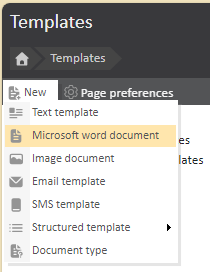
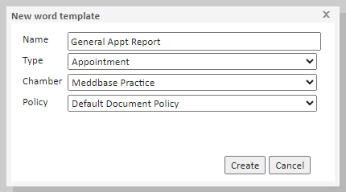
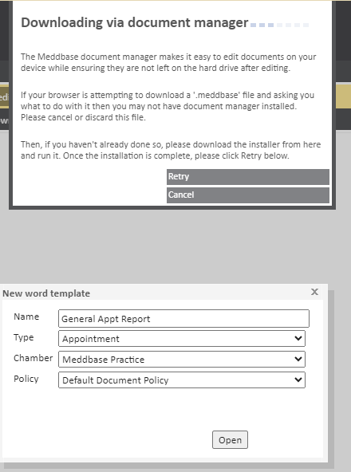
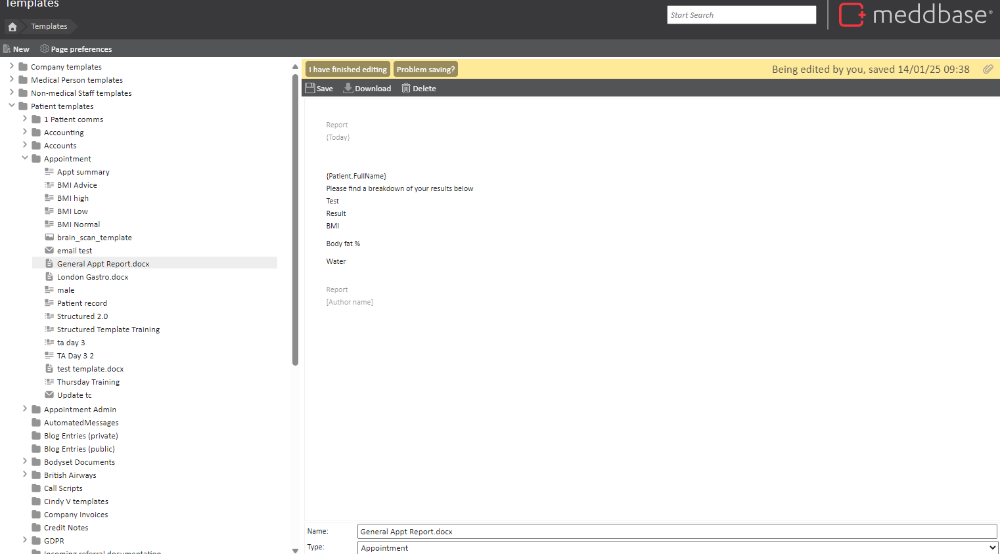

Templates are blueprints for documents within Meddbase. This means templates can be created to generate documents, emails and SMS all from a template. Meddbase allows users to create Microsoft Word Documents from pre-defined templates meaning information from the patient record can be pushed into Microsoft Word, for a user's preference of using the text editor in Microsoft Word.
Just like Meddbase Document Templates, MS Word Templates are formed of a combination of free text and template codes.
To use Microsoft Word Templates you must have the Meddbase Document Manager installed. This can be found under Documents and Links. Click Secure Document Manager and install the application.
The purpose of this article is to guide users through the process of creating Microsoft Word templates in Meddbase. These templates enable users to pull patient information directly into a Microsoft Word document for efficient editing and formatting.
Follow the instructions below to create a Microsoft Word Template:




You are unable to preview formatting of MS Word templates and documents in Meddbase. To view formatting, you will need to download the template or document and to view formatting in MS Word.